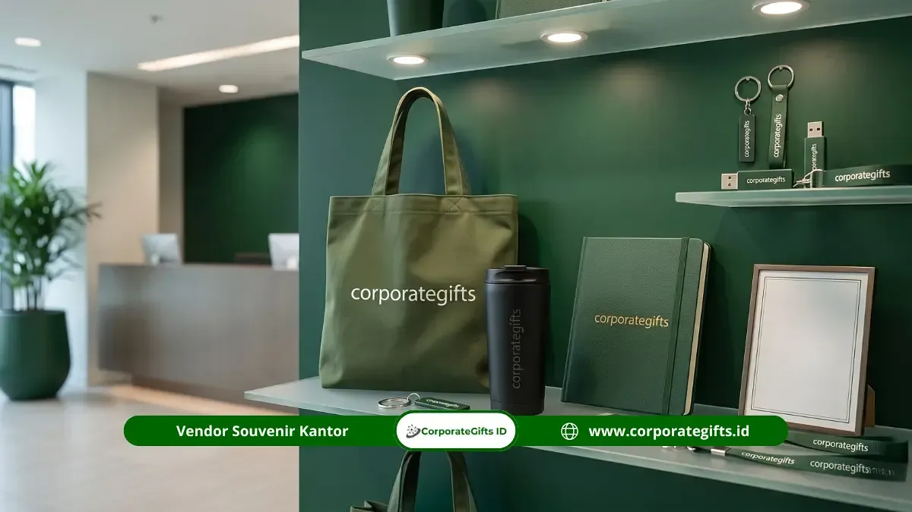

Corporate Gifts ID - Memilih vendor seminar kit yang tepat merupakan langkah fundamental yang menentukan kelancaran dan citra profesional seluruh agenda acara Anda. Vendor yang terpercaya dapat dibuktikan melalui portofolio nyata, kesediaan mengirimkan sampel fisik, estimasi waktu produksi tertulis yang mengikat, serta transparansi rincian harga tanpa biaya tersembunyi.
Dalam industri event organizer di Indonesia, sekitar 30% hingga 40% kendala teknis dalam penyelenggaraan seminar berakar dari pemilihan mitra percetakan dan pengadaan paket seminar kit yang tidak terseleksi dengan cermat. Mulai dari keterlambatan pengiriman di hari H, hasil sablon logo yang luntur, hingga spesifikasi material yang menurun drastis dibanding janji awal.
Poin Kunci Seleksi Vendor Seminar Kit 2026:
- Konfirmasi 3 Hal Wajib: Jadwal tenggat produksi tertulis, kebijakan garansi revisi desain gratis, dan rincian biaya per item.
- Hindari Vendor Berisiko: Jangan bertransaksi dengan pihak yang tidak transparan soal biaya, menolak mengirim sampel fisik, atau lambat membalas pesan.
- Bandingkan Minimal 3 Vendor: Lakukan perbandingan secara apel-ke-apel berdasarkan total nilai (kualitas, layanan, garansi), bukan sekadar mencari harga terendah.
- Waktu Pemesanan Ideal: Mulailah proses seleksi 3-4 minggu sebelum acara berlangsung guna memberi ruang produksi yang matang dan menghindari biaya lembur ekspres.
8 Kriteria Utama Vendor Seminar Kit Terpercaya
Sebelum memutuskan menjalin kerja sama pengadaan cinderamata dengan penyedia jasa, pastikan calon vendor memenuhi 8 standar kelayakan berikut:
1. Portofolio Proyek yang Bisa Diverifikasi
Vendor profesional memiliki dokumentasi riil hasil produksi massal dari berbagai klien korporasi, BUMN, instansi pemerintah, maupun institusi pendidikan tinggi. Minta vendor memperlihatkan foto aktual produk yang sudah selesai dicetak beserta contoh skala pesanan yang pernah ditangani. Waspadai vendor yang hanya menampilkan gambar mockup 3D atau foto generik hasil unduhan internet.
2. Kesediaan Mengirim Sampel Fisik (Proofing Sample)
Sebelum mesin cetak massal dijalankan, vendor terpercaya selalu bersedia membuat dan mengirimkan sampel fisik satu set lengkap. Tahapan ini sangat penting agar panitia dapat menyentuh langsung ketebalan kanvas tas, menguji kelembutan mata pena pulpen branded, mengecek gramasi kertas buku catatan, serta memastikan akurasi warna Pantone logo perusahaan Anda.
3. Estimasi Waktu Produksi Tertulis (Timeline SLA)
Penyedia jasa yang berdedikasi akan mencantumkan rincian tenggat waktu kerja (lead time) secara tertulis dalam Surat Penawaran Harga (SPH). Jadwal tersebut mencakup batas waktu persetujuan desain mockup, durasi proses sablon/laser grafir, perakitan (assembly), hingga estimasi hari pengiriman logistik ke alamat venue acara.
4. Transparansi Harga dan Rincian Biaya per Item
Surat penawaran resmi wajib menguraikan rincian harga satuan setiap komponen (tas, pulpen, notes, lanyard), biaya cetak kustomisasi logo, biaya kemasan (packaging), serta ongkos kirim. Hindari vendor yang hanya memberikan harga gelondongan tanpa rincian karena berpotensi memunculkan biaya siluman menjelang pelunasan.

Koleksi seminar kit custom display dengan variasi tote bag blacu, lanyard digital printing, dan tumbler stainless ramah lingkungan.
5. Kebijakan Revisi Desain Gratis
Proses penyesuaian tata letak logo dan teks pada merchandise sering kali memerlukan beberapa kali penyesuaian. Vendor berkualitas umumnya memberikan fasilitas minimal 2 hingga 3 kali revisi desain digital tanpa membebankan biaya tambahan kepada klien.
6. Responsivitas dan Profesionalisme Komunikasi
Kecepatan tim sales merespons pertanyaan di tahap awal (maksimal 1x24 jam kerja) mencerminkan etos kerja mereka saat menangani pesanan skala besar. Vendor yang lambat merespons saat proses penawaran harga berisiko sulit dihubungi ketika terjadi kendala produksi di lapangan.
7. Legalitas Badan Usaha dan Faktur Pajak Resmi
Bagi pengadaan korporat (B2B) maupun instansi kedinasan, legalitas perusahaan (NIB, NPWP, rekening bank perusahaan, status PKP) adalah syarat mutlak. Ketersediaan dokumen e-Faktur PPN/PPh sangat memudahkan proses audit keuangan dan penutupan SPJ seperti diulas dalam profil legalitas CorporateGifts.ID.
8. Batas Minimum Pemesanan (MOQ) yang Fleksibel
Vendor yang memiliki fasilitas produksi mandiri mampu menawarkan batas minimum pesanan yang fleksibel, mulai dari 50 unit untuk acara internal atau rapat eksekutif, hingga ribuan paket untuk konferensi akbar nasional.
Tabel Komparasi: Vendor Terpercaya vs Red Flag (Tanda Bahaya)
Gunakan tabel matriks evaluasi berikut untuk menguji kelayakan calon vendor sebelum menandatangani surat pesanan:
| Parameter Evaluasi | Vendor Seminar Kit Terpercaya | Red Flag / Tanda Bahaya (Hindari) | Standar CorporateGifts.ID |
|---|---|---|---|
| Portofolio Proyek | Dokumentasi riil foto/video produksi massal | Hanya foto mockup 3D dari internet | Ratusan portofolio BUMN & Enterprise |
| Sampel Fisik | Bersedia kirim sampel riil sebelum produksi | Menolak sampel atau hanya kirim foto WA | Sampel fisik siap kirim cepat |
| Jadwal Produksi | Timeline tertulis dengan jaminan SLA | Hanya janji lisan tanpa kepastian tanggal | Garansi tepat waktu & update berkala |
| Transparansi Biaya | Rincian per item jelas, include PPN resmi | Harga paket global, ada biaya tambahan tersembunyi | Penawaran RAB transparan & e-Faktur |
| Revisi Desain | Fasilitas revisi mockup gratis (2-3 kali) | Dikenakan charge biaya setiap perubahan | Gratis revisi mockup sampai ACC |
| Komunikasi & CS | Dedicated Account Manager responsif | Respons lambat >24 jam, nomor berganti-ganti | Konsultan spesialis siap respon kilat |
| Garansi Kualitas | Klausul retur/ganti baru bila barang cacat | Lepas tangan setelah barang dikirimkan | Garansi ganti baru 100% bila cacat cetak |
4 Saluran Efektif Mencari Vendor Seminar Kit Kredibel
Untuk menemukan kandidat vendor yang berkualitas di Indonesia, Anda dapat memanfaatkan empat jalur pencarian teruji berikut:
- Rekomendasi Rekan Panitia & Komunitas Event Organizer: Referensi dari rekan satu profesi yang pernah sukses mengadakan seminar merupakan testimoni paling valid mengenai integritas dan kualitas kerja suatu vendor.
- Website Resmi Vendor Berbadan Hukum: Telusuri website penyedia yang menampilkan portofolio proyek lengkap, ulasan klien korporat, alamat kantor operasional yang jelas, serta fasilitas formulir permintaan penawaran harga resmi (RAB).
- Platform Media Sosial Bisnis (LinkedIn & Instagram): Periksa konsistensi konten feed, video dokumentasi workshop produksi, serta interaksi responsif vendor terhadap pertanyaan klien di media sosial.
- Pameran Industri Kreatif & Expo Percetakan: Mengunjungi pameran memungkinkan panitia bertemu langsung dengan manajemen vendor, memegang katalog sampel material, dan berdiskusi teknis secara mendalam.
8 Pertanyaan Wajib Saat Negosiasi Sebelum Melakukan Pemesanan
Saat menghubungi perwakilan vendor, ajukan 8 pertanyaan kunci berikut untuk memastikan kesiapan mereka:
- 1. Berapa batas minimum order (MOQ) dan bagaimana skema diskon volume bertingkat?
- 2. Berapa hari kerja lead time produksi dari tahap ACC desain sampai barang siap dikirim?
- 3. Apakah panitia mendapatkan sampel fisik riil sebelum produksi massal dimulai?
- 4. Berapa kali kesempatan revisi desain digital yang diberikan tanpa biaya ekstra?
- 5. Bagaimana prosedur penggantian (retur) jika terdapat barang cacat cetak saat tiba di lokasi?
- 6. Apakah rincian penawaran harga sudah mencakup ongkos kirim dan pengemasan kardus pelindung?
- 7. Apakah vendor dapat menerbitkan dokumen faktur pajak resmi (e-Faktur) dan kwitansi bermaterai?
- 8. Siapa nama narahubung (Dedicated PIC) yang bertanggung jawab mengawal pesanan kami hingga tuntas?
Langkah Membandingkan Penawaran Harga Secara Apel-ke-Apel
Dalam membandingkan 3 atau lebih calon vendor, hindari jebakan memilih opsi yang semata-mata paling murah. Lakukan evaluasi secara komprehensif:
- Uji Gramasi dan Kualitas Bahan: Tas kanvas 10 oz tentu lebih kokoh dibanding blacu tipis; tumbler SUS 304 vacuum tahan dingin 12 jam lebih bernilai dibanding botol plastik biasa.
- Periksa Kualitas Teknik Cetak: Sablon presisi bergaransi tidak retak dan laser engraving bertekstur tajam memberikan nilai estetika tinggi pada logo brand perusahaan.
- Hitung Total Nilai (Total Value): Vendor dengan selisih harga sedikit lebih tinggi namun memberikan gratis proofing sampel, gratis revisi, asuransi pengiriman, dan garansi ganti baru justru jauh lebih menguntungkan dan minim risiko.
Pertanyaan Seputar Pemilihan Vendor Seminar Kit (FAQ)
Kesimpulan dan Langkah Pengadaan Bersama CorporateGifts.ID
Memilih vendor seminar kit terpercaya bukan sekadar mencari penawaran harga termurah, melainkan investasi strategis untuk menjaga kelancaran acara dan kepuasan para peserta. Portofolio nyata, kesediaan mengirimkan sampel fisik, transparansi rincian biaya, serta estimasi waktu tertulis adalah 4 pilar utama yang wajib dipenuhi oleh vendor kredibel.
Percayakan pengadaan seminar kit acara perusahaan dan instansi Anda kepada CorporateGifts.ID. Kami menghadirkan ratusan pilihan paket seminar kit siap kustomisasi dengan jaminan ketepatan waktu, gratis mockup digital, sampel fisik, dan kelengkapan dokumen perpajakan resmi B2B. Kunjungi e-katalog produk kami atau mintalah estimasi penawaran harga melalui formulir permintaan penawaran (RAB) sekarang juga.
Disclaimer: Pilihan spesifikasi material, opsi sablon/grafir logo, serta kelengkapan dokumen perpajakan (e-Faktur PPN/PPh) dapat disesuaikan dengan kebutuhan dan panduan brand instansi Anda melalui tim konsultan CorporateGifts.ID.